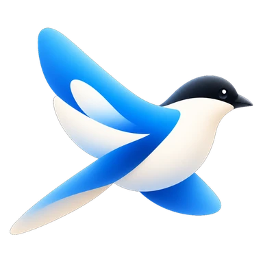

Geogl3 · 지오글
위에서 내려다보는 지리 퀴즈
세계 지도 위에서 나라 이름 · 수도 · 국기 · 접경국을 맞힌다. 대륙과 난이도, 출제 비율을 정해 두면 딱 그만큼만 나온다. 틀린 나라는 따로 남아 다시 나오고, 점수는 계정에 쌓인다.
- 세계 지도 · 국기 · 수도 · 접경국
- 대륙 · 난이도 · 출제 비율 고르기
- 오답 복습과 랭킹

Tools for people who study alone
틀린 것을 흘려보내지 않는 공부 도구를 만듭니다
Works
셋 다 혼자 시험을 준비하는 사람이 매일 쓰는 도구다. 지도 위에서 묻고, 종이로 인쇄해 풀고, 외울 때까지 되묻는다.
Geogl3 · 지오글
세계 지도 위에서 나라 이름 · 수도 · 국기 · 접경국을 맞힌다. 대륙과 난이도, 출제 비율을 정해 두면 딱 그만큼만 나온다. 틀린 나라는 따로 남아 다시 나오고, 점수는 계정에 쌓인다.
ReprintOCR · 리프린트OCR
찍어 둔 오답 사진을 인식해 읽기 좋은 문항으로 다시 짜고, 실전모의고사별로 모아 뒀다가 평가원 판형 그대로 인쇄한다. OMR과 정답표를 올리면 채점과 성적 추세까지 이어진다.
VDIC · 브이딕
듣는 강의의 차례 그대로 단어를 묶어 두고, 뜻과 뉘앙스를 따로 물어 외울 때까지 되묻는다. 틀린 단어는 오답노트에 남고, 별을 단 단어는 맞혀도 남는다 — 헷갈리는 것은 맞혔다고 사라지면 안 된다.
Principles
지어낸 표어가 아니라 세 도구를 만들며 실제로 지켜 온 규칙이다. 그래서 도구를 열어 보면 여기 적힌 대로 동작한다.
맞힌 것은 지나가도 된다. 남겨야 하는 것은 틀린 것이다. 세 도구가 모두 거기서 출발한다 — 틀린 문항을 다시 묻고, 틀린 문제만 모아 시험지를 새로 짜고, 한 번 헷갈린 낱말은 맞혔다고 지우지 않는다.
"아마 이 정도"로 정한 값은 반드시 틀린다. 글자가 어디서 줄을 넘는지, 어디를 자르면 문장이 끊기는지, 인쇄하면 여백이 얼마나 남는지 — 눈대중 대신 실제로 재서 쓴다.
안 되면 안 된다고, 왜 안 되는지 그 자리에서 말한다. 못 읽은 글자를 슬쩍 지우거나 되는 척 반쪽짜리를 내놓지 않는다. 무엇이 어긋났는지 보여야 사람이 고칠 수 있다.
손으로 그은 네모, 손으로 적은 번호, 손으로 옮긴 그림 — 사람이 정해 둔 것을 도구가 몰래 고치지 않는다. 자동은 거들 뿐, 마지막 판단은 늘 쓰는 사람 몫이다.
공부는 결국 종이와 손에서 끝난다. 인쇄했을 때 실제 시험지처럼 보이는지, 흑백으로 뽑아도 뜻이 남는지까지 도구의 몫으로 본다.
Identity
브랜드의 마크는 물까치(Cyanopica cyanus)다. 이름 안에 새가 있다 — PICA는 까치의 속명이다. 까치는 물어다 주는 새고, 이 도구들이 하는 일도 흘려보낸 것을 다시 물어다 놓는 일이다. 그래서 제품마다 새를 다시 그리지 않고 무엇을 물고 있느냐만 바꾼다.
마크에서 그대로 뽑은 다섯 색이 세 사이트의 강조색·표면색이 된다. 글자는 Pretendard(본문)와 Space Grotesk(표시용) 두 벌뿐이라, 셋을 나란히 열어 두면 같은 곳에서 만든 것으로 보인다.